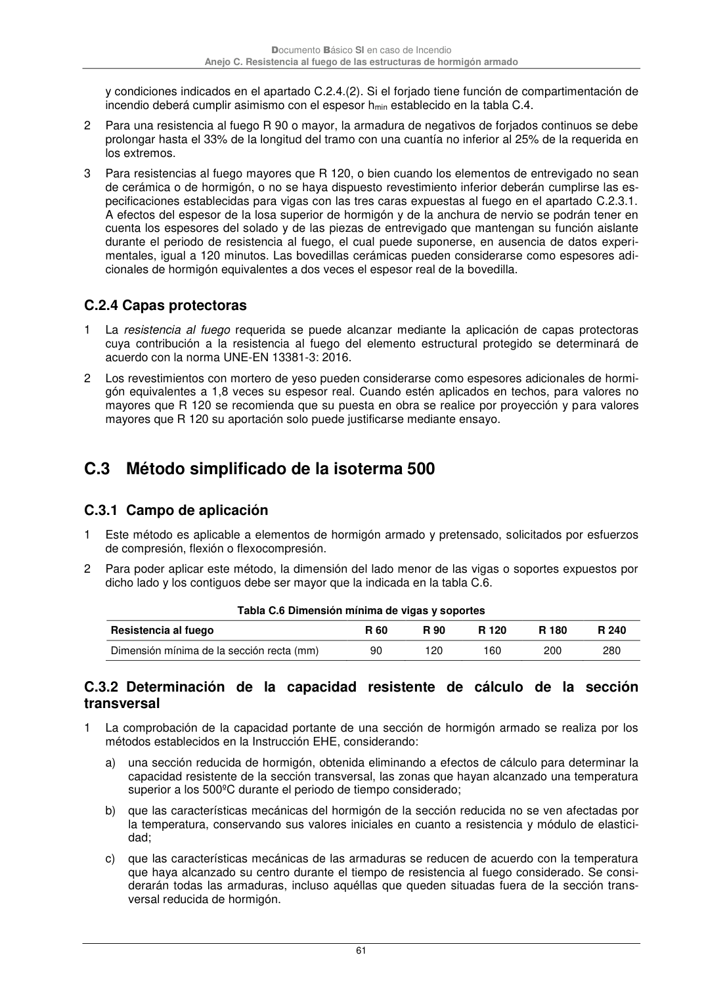
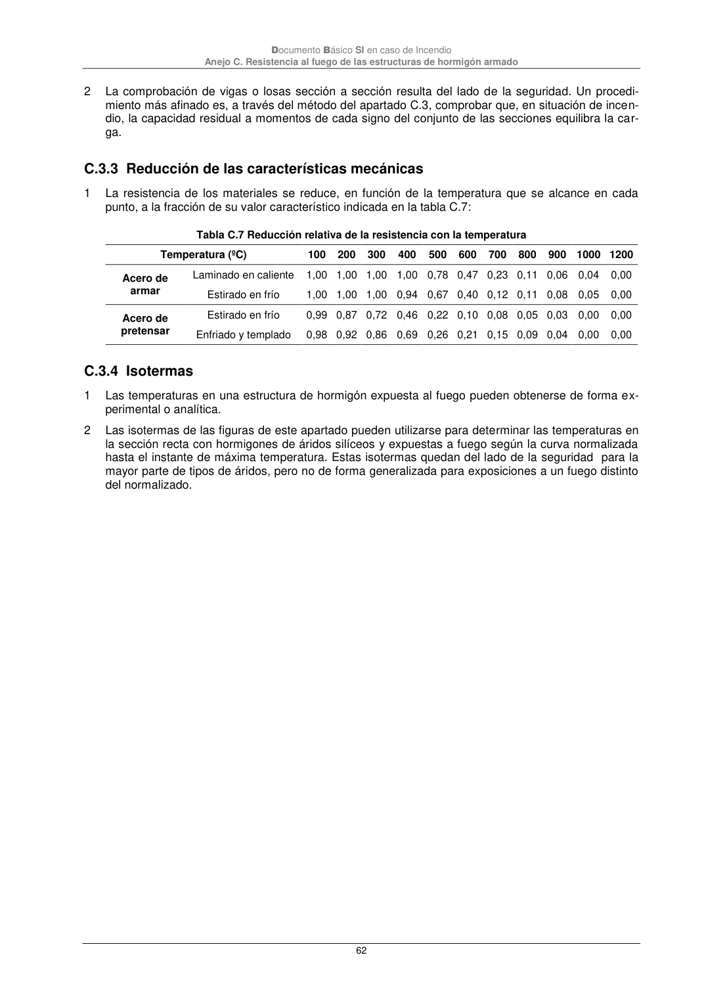

DB-SI Seguridad en caso de incendio · edición 2025-03-04 · capa oficial
Documento DB-SI-oficial · SHA-256 del PDF 0a2e78cd62471d9cc5cfe2efbc6aa39fdbad73c124aea7b039f9de96c141e105
Copia fiel del PDF fuente · Fuente oficial
Ficha de la disposición en la fuente oficial
Formatos: JSON del segmento · Markdown
C.3.2 Determinación de la capacidad resistente de cálculo de la sección transversal transversal 1 La comprobación de la capacidad portante de una sección de hormigón armado se realiza por los métodos establecidos en la Instrucción EHE, considerando: a) una sección reducida de hormigón, obtenida eliminando a efectos de cálculo para determinar la capacidad resistente de la sección transversal, las zonas que hayan alcanzado una temperatura superior a los 500ºC durante el periodo de tiempo considerado; b) que las características mecánicas del hormigón de la sección reducida no se ven afectadas por la temperatura, conservando sus valores iniciales en cuanto a resistencia y módulo de elastici- dad; c) que las características mecánicas de las armaduras se reducen de acuerdo con la temperatura que haya alcanzado su centro durante el tiempo de resistencia al fuego considerado. Se consi- derarán todas las armaduras, incluso aquéllas que queden situadas fuera de la sección trans- versal reducida de hormigón. Documento Básico SI en caso de Incendio Anejo C. Resistencia al fuego de las estructuras de hormigón armado 62 2 La comprobación de vigas o losas sección a sección resulta del lado de la seguridad. Un procedi- miento más afinado es, a través del método del apartado C.3, comprobar que, en situación de incen- dio, la capacidad residual a momentos de cada signo del conjunto de las secciones equilibra la car- ga.

